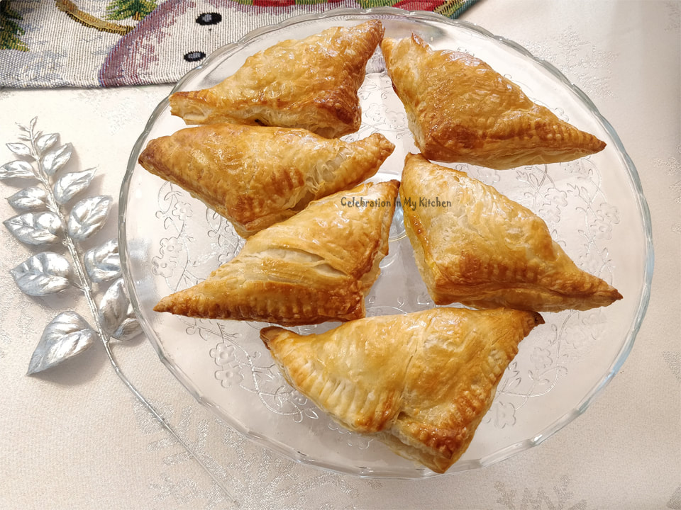

🏠Home
Tuna Pastries

Classic tuna pastries, not quite the same recipe that mum makes, but I was lazy and didn't want to head downstairs and ask her about it
so this is the closest one I could find online
Filling ingredients
- 2 cans of tuna
- 2 green onions (chopped)
- 2 large cloves of garlic (finely minced)
- 2 green chillies (chopped)
- 1/2 teaspon turmeric powder
- 1/2 teaspoon cumin powder
- 1 teaspon chilli powder
- 1 tablespoon breadcrumbs
- A dash of lime juice
- Some freshly cracked black pepper
- A few coriander leaves (chopped)
- 2 tablespoons of butter
Filling method
- Heat butter in a pan and sau te green onions with garlic.
- When soft and fragrant, add green chillies along with
the spice powders.
- Cook on medium heat, fry well and incorporate only the tuna after draining out the brine.
- Sprinkle lime juice, freshly cracked black pepper and stir well until combined.
- Mix in the breadcrumbs to absorb any moisture.
- Garnish with coriander leaves.
- Set filling aside to cool.
Pastry ingredients
- 1 box of Tenderflake puff pastry (397 grams containg two
blocks - available in Canada, how relevant) or frozen puff
pastry sheets if you live anywhere else (defrosted before use)
Pastry Method
- Preheat oven to 200C
- On a lightly floured surface, roll each block of puff
pastry into 9"x9" square.
- Cut this large square into 4
equal squares.
- Put spoonfuls of filling in each. Brush
edges with egg, bring the outer corner to the centre and
seal.
- With the tines of a fork, (the flat back part of the prongs)
mark along the edge of the pastry.
- Place each pastry puff in a baking sheet
lined with parchment paper.
- Brush the top with egg wash and
bake until puffed and brown for 20 minutes.
- Serve warm
Recipe from https://www.celebrationinmykitchen.com/tuna-puffs/tuna-puffs